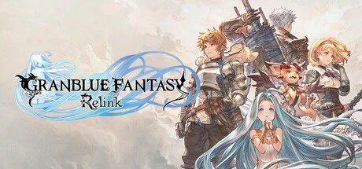

Cygames 基于国民手游《碧蓝幻想》打造、耗时约八年的动作 RPG。你在浮空岛构成的天空世界里，率四人小队即时作战——切人连招、破盾、四人奥义连锁爆发，打怪猎式的巨型 Boss 讨伐战。买断制单机 + 最多四人联机，无抽卡无逼氪，靠华丽战斗手感与 Cygames 动画级演出撑起终局刷装循环。发售 11 天销量破百万，累计超 200 万，Fami 通 36/40。
想象一片由无数浮空岛漂在蔚蓝天空里的世界：人们乘骑空艇穿梭云海，一座座岛屿由名为星晶兽的巨兽守护，而天空的尽头传说有一座星晶族的乐园之岛。你是骑空艇「格兰赛法号」的船长，带着会说话的小龙、拥有神秘力量的少女露莉亚，和一整船伙伴，朝那座传说之岛进发——直到船在陌生空域被击落。
落地的泽加格兰德空域并不太平：阿维亚教会想牺牲露莉亚体内的星晶兽之力、强行撬开通往乐园的门，而这会毁掉整个天空世界。你必须联合半路结识的祭司罗兰、身世成谜的伊德，去平息暴走的星晶兽、强攻教会盘踞的浮空巨岛。每个伙伴各有一手绝活：卡塔莉娜的骑士剑、拉卡姆的双枪、娜露梅的太刀——组起队来，一场动作大戏就此拉开。
你第一次把连锁槽打满、四人奥义连成 Full Burst、整个屏幕炸成一片光的那个瞬间，你会明白 Cygames 磨了八年到底磨的是什么。可当伊德体内潜藏的力量暴走、昔日并肩的伙伴反目相向，你才发现这场冒险的代价从来不轻。这不是一个关于打败魔王的故事，而是一个关于「把彼此的梦扛到天空尽头」的故事——你准备好带谁踏上下一段航程了吗？
日式奇幻 × 动画电影级卡通渲染，是 Cygames 把运营十年的《碧蓝幻想》2D 手绘立绘完美转译成全 3D 动作游戏的招牌美学。底色是浮空岛与云海构成的蔚蓝天空世界——骑空艇、星晶兽、天司奥义共同撑起鲜艳明亮的奇幻壮丽；变异在于角色模型上叠了2D 式排线阴影模拟手绘质感，连奥义演出都做成动画级 CG。色彩锁定天空湛蓝 × 星晶金辉的明亮组合，整体调性是不走暗黑、只走华丽热血的日式王道奇幻。
「日式奇幻动作」的视觉共识跨越了近四十年。1987 年《最终幻想》一脉奠定了日式奇幻 RPG 的召唤兽、水晶与飞空艇美术母题。1997 年《最终幻想 VII》把 JRPG 的过场演出推向电影化。2014 年《碧蓝幻想》手游以皆叶英夫领衔的顶级 2D 立绘和成田勤配乐，定义了 IP 的天空幻想基调。2020 年《碧蓝幻想 Versus》先行验证了把 2D 立绘 3D 化的格斗尝试。2024 年《碧蓝幻想 Relink》集大成——用定制引擎把排线阴影做进 3D 模型、把奥义连锁做成动画级演出，被媒体称为「史上最接近手绘动画的动作 RPG」。
基于体验清单 · 审美偏好 · IP故事三维度综合选出
点击链接跳转到对应平台查看 · 仅整理外部链接